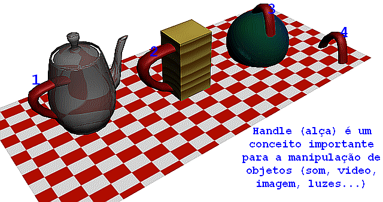

GAMEPROG - Escola de programação de jogos digitais
Contato: Jair Pereira - gameprog.br@gmail.com
Curso completo de Darkbasic Pro Versão 1.069
track10-1.html
10.1 Segurando objetos pela alça
Conceito de handle

Estamos para ingressar na parte divertida do DarkBasic. Nos próximos
capítulos vamos aprender a lidar com som, video e imagem (não
necessariamemente nessa ordem) e logo após vamos lidar com luzes,
câmeras e objetos 3D.
Tem um aspecto comum entre todos esses objetos citados que é o conceito
de handle traduzido como alça. O handle é um número do tipo integer
utilizado para se referir ao objeto que queremos manipular, em outras
palavras, seria o número de identidade desse objeto pelo qual é
referido e assim manipulado.
Esse conceito de handle é comum em programação Windows. Nos bastidores
desse sistema e das suas aplicações tudo funciona com um handle que
identifica botões, janelas e todos os controles do Windows. Tudo tem
uma identidade numérica incluindo a própria aplicação.